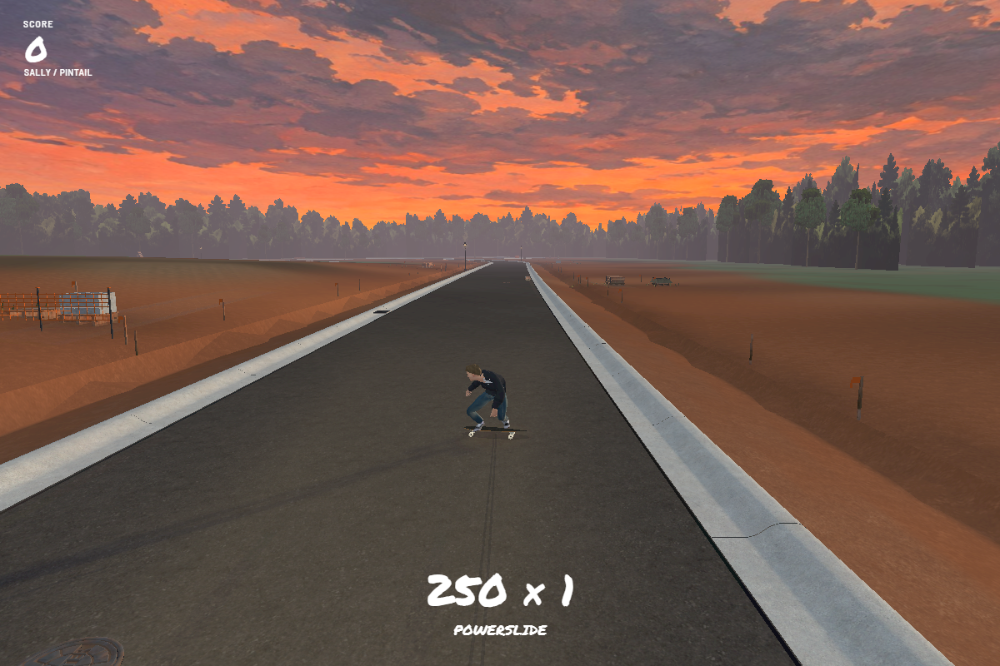

Build 170 · Speed-sensitive Pintail
Play Build 170 →
Build speed, then commit to a firm turn. Slow riding stays a normal carve; speed opens up the deeper slide. Ease off or countersteer to recover and bank your points.
These checks use the same turn input and entry direction at three starting speeds on the real road. Speed falls naturally during each run; the angles below are measured peaks, not fixed limits.
| Starting speed | Peak angle | Result |
|---|
| 5 m/s | 5° | Normal carve |
| 8 m/s | 28° | Drift |
| 14 m/s | 79° | Drift |

Slides require roughly 14 mph to start. As speed falls, the board straightens and regains grip. Your entry line still matters—curbs, dirt and obstacles remain real limits.